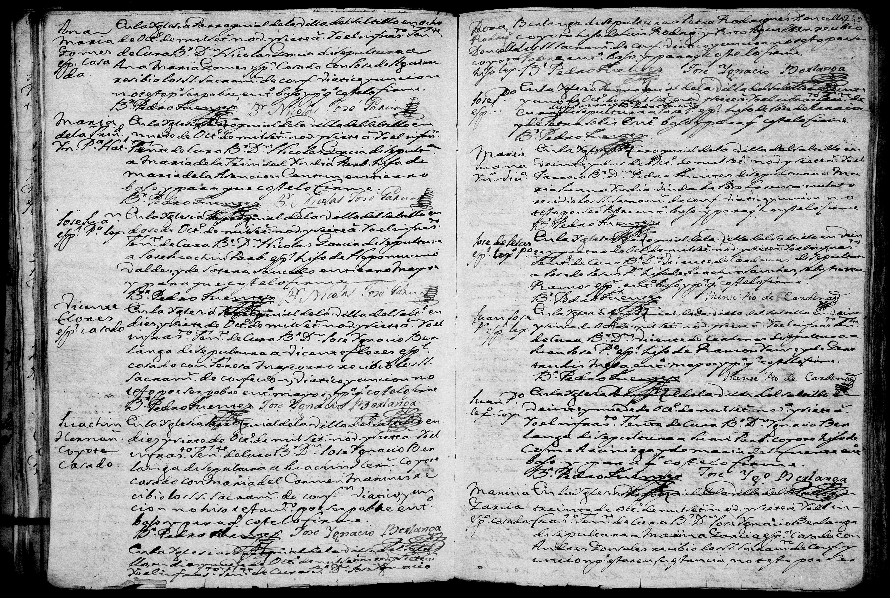

← Volver al Archivo Central
Expediente Histórico: 3

Manuscrito Original (Clic para ampliar)
Transcripción Paleográfica
Perfil: Matrimonio de Francisco Garcia y Antonia Guajardo
Descripción: Acta de matrimonio de Francisco Garcia y Antonia Guajardo fechada el 30 de noviembre de 1864 en San Pablo de Galeana.
Transcripción:
No 179
Francisco Garcia y Antonia Guajardo
En treinta de Noviembre de mil ochocientos
sesenta y quatro. Previa dispensacion del Iltmo
Sr. Obispo de la Diocesis en el impedimento de consanguinidad, yo el
Cura P. de S. Pablo de Galeana [...] despues de los de-
mas requisitos y amonestaciones despose infacie
eclesiae a D. Francisco Garcia hijo legitimo
de D. Franco Garcia Peña y de Da. [...]
soltero, con Da Antonia Guajardo [...] de
D. Franco Guajardo y de Da Maria de [...]
ambos de esta jurisdiccion. Padrinos D. [...]
y Da. [...]. Testigos [...]
Y para que conste lo firme.